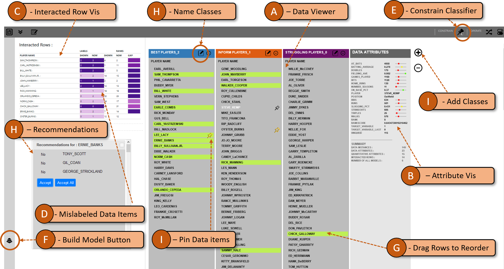

Recent visual analytics systems make use of multiple machine learning models to better fit the data as
opposed to traditional single, pre-defined model systems. However, while multi-model visual analytic systems
can be effective, their added complexity adds usability concerns, as users are required to interact with the
parameters of multiple models. Further, the advent of various model algorithms and associated hyperparameters
creates an exhaustive model space to sample models from. This poses complexity to navigate this
model space to find the right model for the data and the task.
We present Gaggle, a multi-model visual analytic system
that enables users to interactively navigate the model space. Further
translating user interactions into inferences, Gaggle simplifies working with
multiple models by automatically finding the best model from the high-dimensional
model space to support various user tasks. Through a qualitative user study, we show how our approach helps
users to find a best model for a classification and ranking task. The
study results confirm that Gaggle is intuitive and easy to use, supporting interactive
model space navigation and automated model selection without requiring any technical expertise from users.